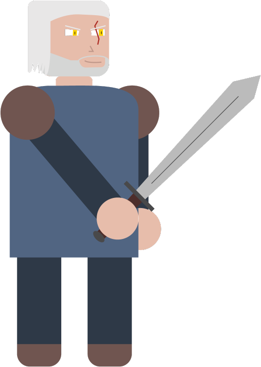
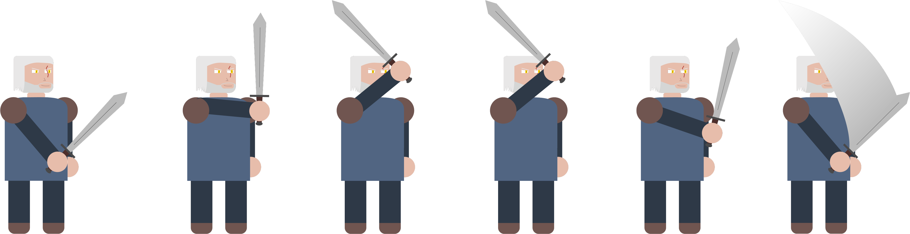
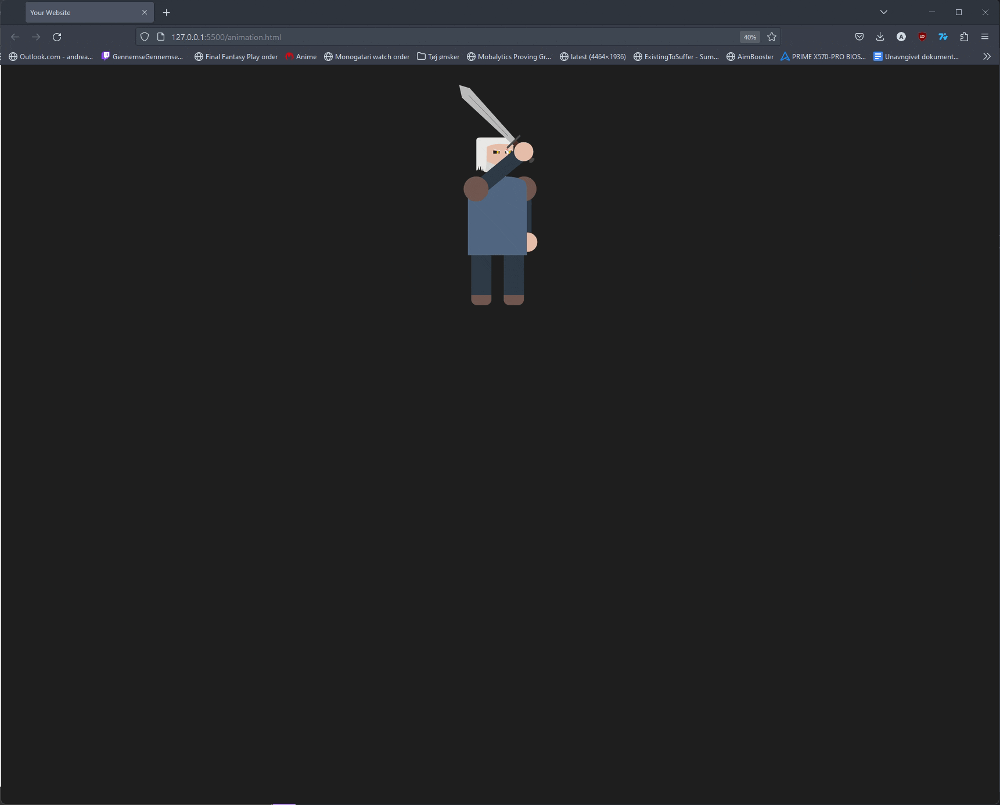

Animation produktion

Jeg har fået en opgave i forbindelse med min uddannelse af at lave en animation og kode den med HTML og CSS.
Startede ud med at tilegne den viden jeg havde brug for ved at først lære og forstå koden sådan jeg kunne animere tekst og billeder med HTML og CSS.

Processen
Efter det gik jeg i gang med noget visuelt research og fandt frem til den artstyle der var bedst tilegnet mig lige nu med det niveau mine tegner evner ligger på.
Fik tegnet denne figur i Adobe Illustrator som jeg bagefter kunne lige ind i et spritesheet sådan det var lige til at kode. Brugte basale animations principper, som anticipation og arcs til at skabe en mere livlig og impactful effekt.

Færdige resultat
